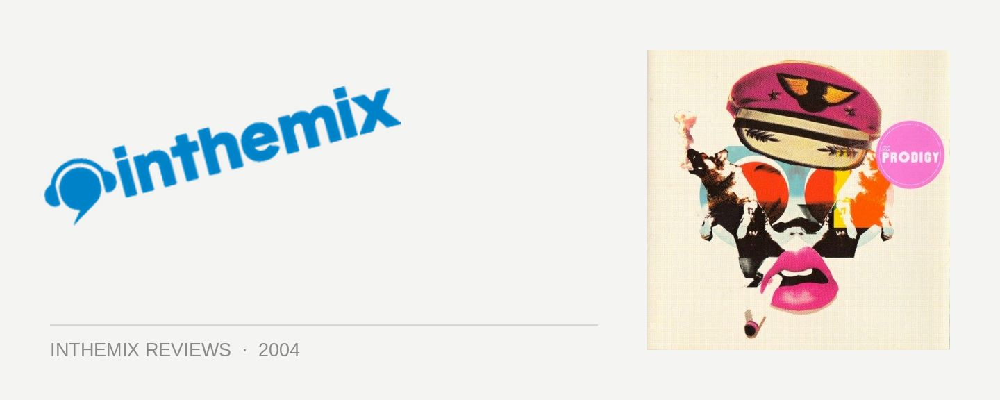

The Prodigy - Always Outnumbered, Never Outgunned
(XL/Sony)
The Prodigy’s influence over the dance culture we all know and love is something that simply cannot be overstated. With a legacy that stretches back to the genesis of the scene in the early 90’s, they were among the first acts to tour the world and crack the elusive US market, their massively successful Fat of the Land album shifting millions of units. But the single they emerged from their extended hiatus with in 2002 didn’t exactly do them any favours - Baby’s Got a Temper was so abhorrent that it was beyond ridicule. Things were looking pretty grim for The Prodigy - outclassed, outdated, and most definitely outgunned by the looks of things. Yet the group’s outspoken frontman Liam Howlett was having none of that, and several years on The Prodigy have hit back with their long awaited comeback Always Outnumbered, Never Outgunned. So the question begs: have The Prodigy maintained their incredible legacy, or do they look merely look like a washed-up bunch of tired old hacks?
Following the critical fallout that accompanied the release of Baby’s Got a Temper, Liam Howlett was apparently forced to ditch a whole album of material and return to the drawing board. The subsequent direction taken by The Prodigy is obvious from the moment you glance at the artwork that adorns Always Outnumbered, Never Outgunned: the distinctive neo-techno-gothic artwork of their previous albums has been ditched in favour of a 1980’s Andy Warhol-esque collage of pop culture signifiers, bright red lipstick and disco balls. It’s nothing if not hackneyed to the extreme. So from the outset, rather than pushing the boundaries and determining the trends, the all-pervasive influence of electroclash is stamped all over the album. I’d hesitate to criticise them for jumping on the 80s bandwagon, and if they’d managed to nail the sound then nobody would have been complaining – but the results speak for themselves.
The album opens on a high note with the heavy rock surge of Spitfire. With its loud percussion, computerised bleeps and raw guitar blasts, it has more in common with the mid-90’s industrial metal of Ministry or Nine Inch Nails than anything else - but pack a big wallop it does nonetheless. Whatever reservations I had over The Prodigy’s decision to cash in on the 80s craze were momentarily put to bed with the album’s first single Girls. It’s the most slammin’, attention grabbing, knock-you-up-and-down single that’s been heard in a very long time, and has just about the power of a sledgehammer to the face when the bass drops in. Fusing electroclash with the raw old-school rave beats of their past material, Howlett has scaled towards the dizzy heights reached by the Freestylers with Push Up. And what’s most important is that it’s unmistakably The Prodigy.
But first impressions can be deceiving - while Girls raised expectations that The Prodigy would remain relevant well into the new millennium, the rest of the album shatters this illusion. Many of the songs on Always Outnumbered, Never Outgunned are memorably characterised by an annoying sense of repetition. While a lot of great dance music is all about the clever beauty of recurrence, it’s as if Liam Howlett just doesn’t know how to turn them into memorable hooks anymore. This is most apparent on a song like Memphis Bells: on first listen the tendency simply annoys, but on second and consecutive listens it really begins to test your patience.
Always Outnumbered, Never Outgunned is also an album that carries a hardened punk sensibility, and this makes a lot of sense when you consider the raw punk energy they inject into their celebrated live performances. But once again, it just doesn’t come off quite right. Songs like Get Up, Get Off have all the correct ingredients – slamming breakbeats, tough rapping vocalists and big guitars. But it seems The Prodigy no longer have the smarts to pull it off, and Shoot Down is really the only song that manages to nail the raw electro-punk vibe that they’re aiming for. Rather than leaving the impression of a group with almost two decades of musical experience behind them, it comes across as more like amateur teenage punks jamming in their parent’s garage.
The smooth funky beats of The Way It Is towards the album’s end does raise the vibe a little, lifting a sample from Michael Jackson’s Thriller - but after that before you’re able to blink, it all comes to a grinding halt. You’re left scratching your head and asking yourself, after seven years of waiting is that really all The Prodigy have to offer? No other high-profile dance producer is as outspoken as Liam Howlett - he hates Ibiza, he hates the Beastie Boys, he hates Pete Tong and he hates house music. But his arrogance has delivered surprisingly little in recent memory in terms of quality music. Several years ago Howlett was quoted as levelling criticism at Junkie XL, among others, accusing them of unoriginality and of shamelessly aping The Prodigy’s music. But ain’t it funny how much more of a prolific, creative and exciting musical career Junkie XL has gone on to enjoy? The Prodigy have been left in the dust, and it would have been just a little bit easier to take if Liam Howlett had stopped to check that he was still at the top of his game before shooting his mouth off.
It needs to be established that Always Outnumbered, Never Outgunned is far from an awful album - but the final result is one of mediocrity that falls well short of the earth-shattering release anticipated by fans. In attempting to slot themselves into current popular music trends The Prodigy have forgone their musical identity, and it’s a pitiful shadow of the incredible music found on the landmark Music for the Jilted Generation album. For The Prodigy, mediocre simply isn’t good enough – mainly because they’re competing with the memory of themselves. In the past they’ve been known for their stunningly energetic live performances, so it appears the only redemption left for Howlett and co is to see how they perform on the live circuit. Because Always Outnumbered, Never Outgunned is certainly less than what was both hoped for and expected.